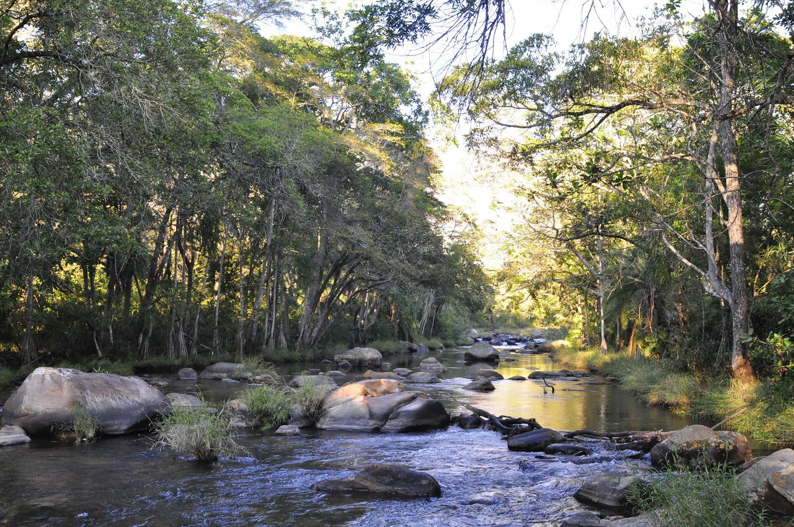
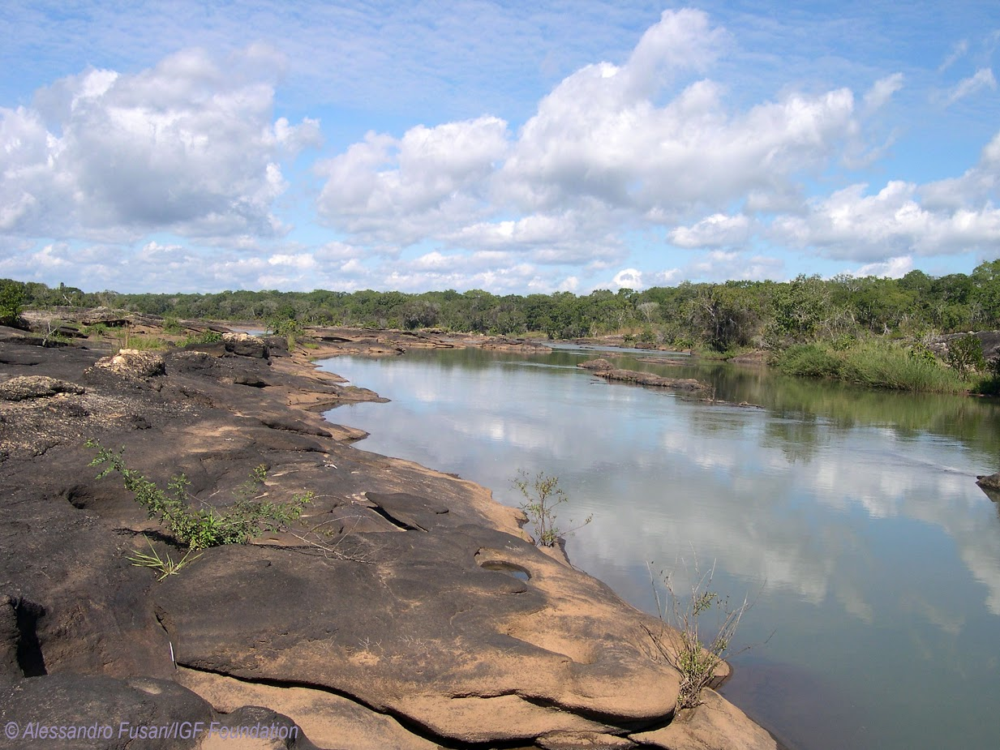

- 
- 
Extremamente simpático e encantador, o povo moçambicano encontra a sua origem histórica nos primitivos povos Bosquímanes. Contudo, deve-se referenciar que na sua longa e marcante história, entre os anos 200 à 300 d.C., ocorreram as grandes migrações do povo Bantu, oríundos da região dos Grandes Lagos a Norte, que empurraram os povos locais para regiões mais pobres ao Sul. Nos finais do Século VI surgiram nas zonas costeiras, os primeiros entrepostos comerciais patrocinados pelos swahil-árabes que procuravam essencialmente a troca de artigos vários pelo ouro, ferro e cobre vindos do interior.
No Século XV, iniciou a penetração portuguesa, com a chegada de Pêro da Covilhã às costas moçambicanas e o desembarque de Vasco da Gama na Ilha de Moçambique. Desde 1502 até meados do Século XVIII, os interesses portugueses em Moçambique estavam sob a administração da Índia portuguesa. De início, os portugueses criaram as feitorias, com objectivos meramente comerciais, tendo nos finais do Século XVII criado os "prazos" no Vale do Zambeze, uma espécie de feudos doados ou conquistados e que constituíram o primeiro estágio da colonização portuguesa. Com a extinção dos prazos em 1932 e com a emergência dos estados militares, iniciou o comércio de escravos que se manteve mesmo após a abolição da escravatura nas colónias, em 1869.
A ocupação colonial nunca foi pacífica, tendo-se verificado até ao início do Século XX, uma forte resistência por parte de vários chefes tribais como Mawewe, Ngungunhana, Komala e outros. Assim, Moçambique se levantou contra a ocupação colonial portuguesa, aos 25 de Setembro de 1964, a partir da FRELIMO – Frente de Libertação de Moçambique, que conduziu a luta armada que culminou com a independência do país, proclamada aos 25 de Junho de 1975 por Samora Moisés Machel, primeiro Presidente da República. Contudo, em 1977 desencadeou-se a guerra civil que culminou em 1992, com a assinatura do acordo de paz entre FRELIMO e RENAMO. Em 1994, tiveram lugar as primeiras eleições gerais, ganhas pelo Presidente Joaquim Alberto Chissano e pelo partido FRELIMO, que voltaram a ganhar nas eleições seguintes. Em 2004, tiveram lugar as terceiras eleições gerais ganhas pelo Presidente Armando Emílio Guebuza e em 2015, se registram as quartas eleições, ganhas pelo Presidente Filipe Jacinto Nyusi.